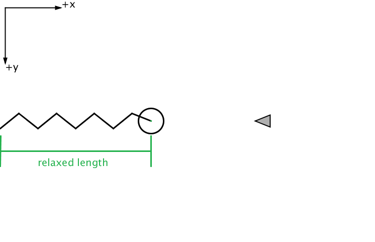

Think back to the momentum exercise. The little ship can collide with a "blob" and stick to it. Now imagine that this blob is attached to a spring. Wouldn't it be interesting if the ship could collide with the blob and then the spring would push and pull both around? This is what we will do in this exercise.
This spring will be attached to the blob and do the left-hand side of the screen as shown below.

Step 0. Read/think about spring forces. Thus far the only force we have considered is $F_{\rm thrust}$ which is a constant force in whatever direction the ship is pointing. (We also considered gravity in the lunar descent exercise, but for simplicity this was treated as a constant acceleration instead of a constant force.) The force from a spring is a very different kind of force. The more the spring is compressed, the more it pushes back and the more the spring is stretched out the larger the force to try and pull it back into the rest position. The formula that corresponds to this is given here: $$F_{\rm spring} = -k (x - L_{\rm relaxed})$$
The idea is that if $x = L_{\rm relaxed}$ then the force is zero. When $x < L_{\rm relaxed}$ then the spring force is positive so that it pushes the object to a larger $x$ value. And if $x > L_{\rm relaxed}$ then the spring force is negative and the object is pulled to a lower $x$ value.
In the code you will soon develop, you should use Lrelaxed to represent $L_{\rm relaxed}$ and Fspring for $F_{\rm spring}$.
Step 1. Download a modified version of the momentum code. This version will have a spring drawn on it and other minor tweaks. Right-click and download spring.pde and functions.pde. Create a folder named spring and put these codes in that folder. Then double click on spring.pde so that it opens in the processing interface.
Please note that this exercise will remain 1-Dimensional for simplicity! Sorry!
Step 2. Add the spring force! Let the blob accelerate! We are going to add a spring force to the blob. If the position of the blob (x_blob) is not equal to the relaxed length (Lrelaxed) the force will cause the blob to accelerate.
To add the spring force, change the code in the following ways:
deltaVx_blob for this purpose.
k for the spring constant and set it to 0.5.
Lrelaxed for the natural length of the spring and set it to 300.
Fspring. Don't set it to any specific value.
display(); add a line of code to determine Fspring that depends of the position of the blob, k constant and the relaxed length of the spring (Lrelaxed)
deltaVx_blob)
If you are able to make all these changes your code should behave like this.
Step 3. Get the spring to do this! Think about the motion!
When is the velocity the largest? When is the force the largest? When is the acceleration the largest?
Step 4. Analyze the motion!
Let's modify the code in order to measure how long it takes for the blob to go from the relaxed position to either the fully stretched or fully compressed position and back. The easiest way to do this is to measure the amount of time it takes for the blob to return to $x = L_{\rm relaxed}$. This turns out to be trickier than it sounds. Follow the directions below. If you can think of a different way to do this, please feel free to try it out!
Step 4.a. Near the beginning of spring.pde create a variable called tcounter and set it equal to zero. Somehere after display(); add this:
tcounter += dt;
text("counter time = ",0.7*width,0.6*height);
text(tcounter,0.75*width,0.65*height);
Step 4.b. Near the beginning of spring.pde create a variable called tlasttime and set it equal to zero. We need to set this variable to the value of tcounter every time the blob moves past the relaxed position!
Somewhere after display(); add this:
// if the position of the blob is near the relaxed position
if ((abs(x_blob - Lrelaxed) < 5.0) & (tcounter > 10*dt)) {
tlasttime = tcounter;
tcounter = 0; //Reset the clock
}
text("half cycle time = ",0.7*width,0.75*height);
text(tlasttime,0.75*width,0.8*height);
The values of 5.0 and 10*dt are somewhat arbitrary. The main thing is that when x_blob is close to the value of Lrelaxed and tcounter is much larger than zero, then the value of tcounter gets copied to tlasttime. Then the "clock" gets reset to zero with tcounter = 0.
If you modify your code correctly your program should behave like this
Step 4.c. What is the typical "half cycle time" when the ship is attached to the blob?
Fly the ship into the blob and then without firing the thrusters, watch the ship move back and forth a few times from the force of the spring. Write down what the typical "half cycle time" is.
Now fire the thrusters to increase the amplitude of the oscillations. Is the half cycle time the same or different? Make sure you watch the oscillations for a few cycles before you decide. Does the answer surprise you?
Step 5. Calculate the expected "half cycle time" from what you know about oscillating springs
What is the "half cycle time" equivalent to? The angular speed? frequency? period? Use what you know about the period of an object attached to a frictionless spring to calculate what you would expect the "half cycle time" to be based on the mass of the objects and the spring constant. You should be able to estimate this quite accurately. (Hint: the angular speed of a frictionless spring is $\omega = \sqrt{k/m}$.)
(Challenge #1) Step 6. Does the "half cycle time" depend on whether the ship is attached to the blob?
It should be possible to fly your ship into the blob to get it oscillating and then fire your thrusters so that the ship flies away from the blob, but the blob is still oscillating. What is the "half cycle time" in this case? The "half cycle time" should be slightly different when the spring is only pushing around the blob!
Step 6.a. Modify your code if nessary Is this true for your program? What should you modify in your code in order to make sure this happens? (Hint: add one line of code so that deltaVx_blob is different depending on whether the ship is stuck to the blob or not.)
If you modify your code in the right way your program should behave like this
Step 6.b. Measure the "half cycle time" Measure the half cycle time for both when the ship is attached to the blob and when the ship is not attached to the blob. Make sure you can explain both results for the half cycle time from your knowledge of oscillating spring systems (i.e. from Step 5)
Change the mass of the blob (mass_blob) and the mass of the ship (mass) and see if the "half cycle time" changes for both cases where the ship is and is not attached to the blob. Which values for the masses did you choose? Can you explain the new results for the "half cycle time"?
(Challenge #2) Step 7. Add damping to the spring system!
Add a drag (a.k.a. damping) force to the spring system. There is more than one kind of damping force you could use, but the simplest is $F_{\rm drag} = - b v$ where $b$ is a constant.
b and set it to 0.1
Test it out! Roughly how many cycles does it take for the motion to slow to a stop? Underdamped systems go through multiple oscillations before they slow to a stop. Make b much larger until the damping is so large that the system slows to a stop without oscillating. Overdamped systems slow to a stop without going through multiple oscillations. What value of b should you use to simulate a critically damped system?
If you want to share your program with a friend, send them three files: Your spring.pde, a copy of functions.pde and right-click and download the file spring.html. As long as these three files are in the same folder on your or someone else's computer you should be able to double click on spring.html and play the game on a web browser. You don't need to install the processing interactive environment to get this to work.
If this seems overly complicated the other way you can share your program is by clicking "Create sketch" at openprocessing.org. Upload your code, set up an account (for free!) and then give your friends a link to the sketch.